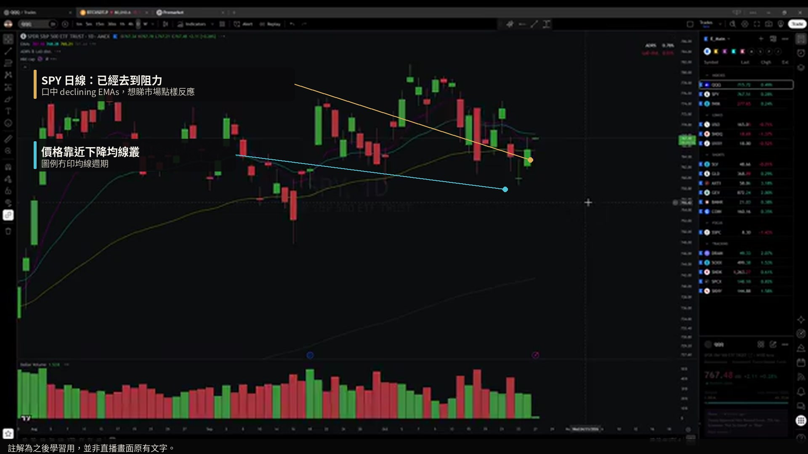
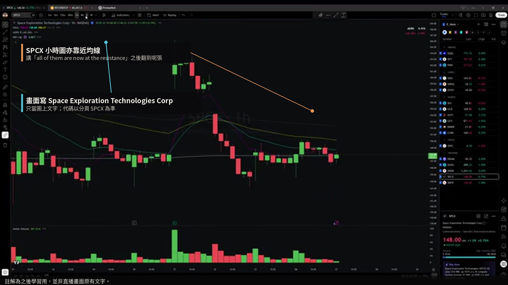

概要
位置到咗，先睇反應
13:26 佢話想睇市場點樣反應呢啲下降 EMAs：而家佢哋都到咗阻力位置，自己好想知道呢次反應會點。畫面先係 SPY 日線，隨即翻到 SPCX 小時圖。
圖一
SPY 日線：已經去到阻力
直播 13:35

原話
Let's see how the market reacts to this, declining EMAs. Like all of them are now at the resistance level. Really curious to see the reaction.
睇下市場點樣反應呢啲下降 EMAs。而家佢哋都到咗阻力位置。我真係好想知道呢次反應會點。
點樣讀
呢段冇新規則，只係把開場講過嘅下降均線阻力再核對一次，並且明確話要等反應。
圖例冇印均線週期。
圖二
SPCX 小時圖亦靠近均線
直播 13:40

點樣讀
「all of them」係口中複數，畫面由 SPY 轉到 SPCX。唔好把呢張單獨讀成已經確認嘅淡倉訊號。
畫面寫住 Space Exploration Technologies Corp，只當圖上文字；代碼以分頁 SPCX 為準。
附註
注意事項
- 13:40 之後到 25:42 大約 12 分鐘幾乎冇對白，主要係翻圖，唔做成圖冊。
- 08:43–12:07 同 25:42–27:00 係執行風格、坐咗場外同加倉流程嘅問答，冇對應走圖教學，唔單獨成科。